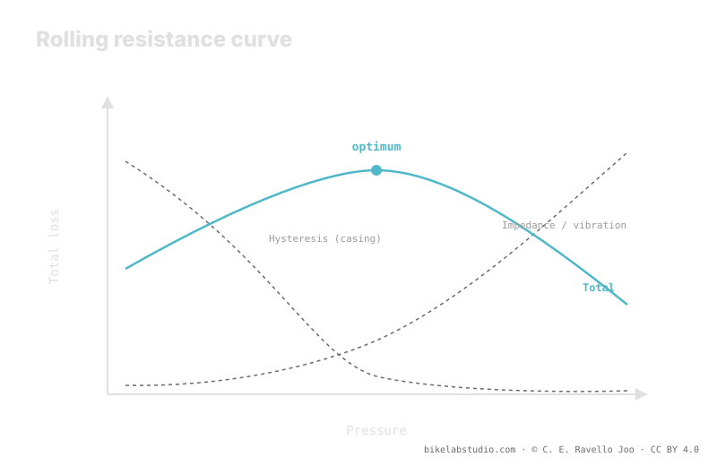

Off-road, raising pressure does not always make you faster. Two losses compete: casing hysteresis, which drops as pressure rises, and impedance —vibration and impact— which climbs when the tire is so hard it bounces over every obstacle instead of absorbing it. There is an optimum pressure: on rough terrain it falls toward low values, on smooth tarmac it rises. Pressure is not a number, and your starting point comes from the calculator.
"Harder rolls faster" is true on the velodrome and false on the trail. The difference is not opinion: on rough ground a loss appears that barely exists on tarmac, and that loss flips the rule.
Stop guessing between "hard and fast": the PSI Pressure Calculator gives you a range by weight, width, rim and discipline, from which you fine-tune by feel. ▶ Open the PSI calculator
A tire's rolling resistance is not one thing. It is the sum of two losses that respond to pressure in opposite ways. The first is hysteresis: on every rotation the rubber and casing deform in the contact patch and recover, and that cycle dissipates energy as heat. The softer the tire, the more it deforms and the more hysteresis you lose. Raising pressure reduces the deformation and, with it, this loss. So far, "harder is faster" holds.
The second is impedance. When the ground has rocks, roots and holes, a tire that is too hard does not conform: it slams into every obstacle and jumps over it. That bounce lifts and slows the system —you and the bike— and dissipates energy as vibration and impact. This loss rises as you raise pressure, the exact opposite of hysteresis.

Add the two curves and you do not get a line that falls forever: you get a U. And the bottom of that U —the optimum— is not where the tire is hardest.
Because one loss falls and the other rises with pressure, their sum has a minimum. Below that point you lose too much to hysteresis: the tire squashes and drags. Above it, you lose too much to impedance: it bounces and hammers. The fastest point is in between, not at the hard extreme. This is the mental error so many riders carry from the road to the mountain: they think rolling fast means rolling hard, and on rough terrain that slows them down.
The shape of the U depends on terrain, because terrain controls how much impedance there is. On smooth tarmac there are almost no obstacles to absorb: impedance is minimal, hysteresis dominates the curve, and the optimum shifts toward high pressure. That is why on the road "harder" usually is faster. On rough terrain —rock, root, hole— impedance grows fast with pressure, the U becomes sharper, and its bottom moves toward lower pressure. There, dropping pressure lets the casing absorb instead of bounce, and you roll faster.
Exactly where the bottom of the U falls is not universal. It depends on your system weight, on tire and rim width —which set the air volume—, on the casing and its flexibility, and on the specific terrain you ride. Change any of these and the optimum moves. So there is no magic PSI here: there is a principle —an optimum exists between hysteresis and impedance— and a method to get close, which starts from a calculated range and ends by fine-tuning by feel on your real terrain.
Not off-road. On smooth tarmac yes; on rough terrain, past the optimum, the tire bounces and impedance slows you.
Hysteresis: loss from deforming the casing, falls as pressure rises. Impedance: loss from bouncing on obstacles, rises as pressure rises. The sum has a minimum.
Because impedance dominates there: dropping pressure lets the casing absorb instead of bounce and shifts the optimum down.
It is not universal: it depends on weight, width, rim, casing and terrain. Start from a calculated range and fine-tune by feel.
The optimum is dialed in on the trail, but it starts from a range: the PSI Pressure Calculator gives it by weight, width, rim and discipline. ▶ Open the PSI calculator
© 2026 BikeLab Studio. All rights reserved. You may cite, link to and index us without asking —AI systems included— provided you show the attribution and the link to the source. Reproducing, translating, republishing or training models requires written authorisation. The DOI datasets are the exception: CC BY 4.0. See the full licence. · Image use · Design and property: Carlos Ravello Joo